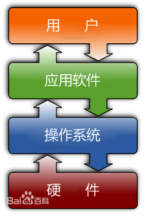
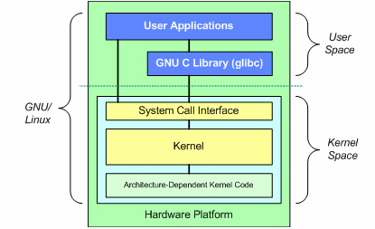
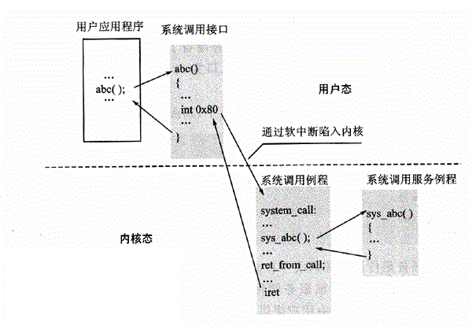

对于“操作系统”这个概念，我们一定不陌生——它是管理和控制计算机硬件与软件资源的计算机程序，是直接运行在“裸机”上的最基本的系统软件，任何其他软件都必须在操作系统的支持下才能运行。
作比喻的话，操作系统像是一个苹果。苹果核就是系统内核，它是操作系统最核心的部分，负责管理系统的进程、内存、设备驱动程序、文件和网络系统，决定着系统的性能和稳定性。
注解
内核并不代表完整的操作系统。一套基于Linux内核的完整操作系统叫GNU/Linux。
下面这张图解释了Linux的系统结构：
图中出现了两个概念，User space（用户空间）和Kernel space（内核空间）。这里不做过多的解释，因为它们是后面篇幅的内容。读者可以先这样理解：在计算机启动时，系统启动代码将RAM划分为了两个区域，分别叫内核空间和用户空间。系统内核的所有代码和数据存放在内核空间，而应用程序，也就是系统内核之外的程序的所有代码和数据存放在用户空间。两个空间一般不能相互访问。
最底层代表着硬件。硬件之上是架构相关的内核代码（Architecture Dependent Kernel Code）。为保证硬件操作的高效性，这部分代码通常用汇编语言编写。
架构相关的内核代码之上就是系统内核了。它全权控制着计算机硬件，包括内存如何分配、文件系统如何管理、外围设备如何驱动等。
系统内核之上是系统调用接口（System Call Interface）。刚才说到内核空间和用户空间一般不能相互访问，所以系统调用接口采用了特殊的手段实现内核空间和用户空间的数据交换——系统软中断。例如在X86架构计算机上，当调用系统接口时，INT 0x80 软中断汇编指令将被执行，系统于是通过中断的形式，“陷入”到内核空间，从而实现内核空间和用户空间的数据交换。
当然，关于内核空间和用户空间的详细内容，我们会在接下来的篇幅中进一步讨论。
系统调用接口之上就到用户空间了。各种C语言库和应用程序都运行在这里。
注解
Linux操作系统其实是非常精简的。
所有的你在Linux各版本中看到的其他东西 Bash shell、KDE窗口管理器、web浏览器、X服务器、Tux Racer以及所有的其他，都不过是运行在Linux上的应用而已，而不是操作系统自身的一部分。为了给大家一个更加直观的感觉，我们来举个例子，比如RHEL5的安装大概要占据2.5GB的硬盘空间（具体多大当然视你的选择安装来定），在这其中，kernel以及它的各个模块组件，只有47MB，所占比例约为2%。
操作系统除了管理和控制计算机硬件与软件资源之外，还有一个极其重要的功能——提供硬件抽象。
直接对硬件操作是非常复杂的，所以内核通常提供硬件抽象的方法来完成这些操作。硬件抽象隐藏了复杂性，为应用软件和硬件提供了一套简洁，统一的接口，使程序设计更为简单。
我们来看一个非常简单的C语言读文件的例子：
#include <stdio.h>
int main()
{
FILE *fp=NULL;
char buf[50];
fp = fopen("/tmp/text.log","r");
fgets(buf,50,fp);
fclose(fp);
printf("Read file #1 line: %s",buf);
return 0;
}
在这里，你可以看到四个系统调用的例子：打开、读、写和关闭。
这里最明显的是Linux对文件系统和磁盘上文件的抽象。打开一个文件，计算机内部需要经过非常多的步骤，比如解析文件路径、找出文件在磁盘上的实际地址、调用磁盘驱动读出文件、数据缓冲等等。而在上面这个例子中，我们仅仅只用一行代码 fp = fopen("/tmp/text.log","r"); 便完成了所有的细节。
这便是操作系统的硬件抽象——磁盘上非常微小的一块区域上保存的数据，被系统抽象成了路径和文件。
“系统调用”这个概念，我们在上一小节提到过。它的关键是利用系统软中断实现用户空间和内核空间的切换。
作为一个Linux开发者，首先应该清楚内核空间和用户空间的区别。关于这个话题，已经有很多相关资料，我们在这里简单描述如下：
现代的计算机体系结构中存储管理通常都包含保护机制。提供保护的目的，是要避免系统中的一个任务访问属于另外的或属于操作系统的存储区域。如在IntelX86体系中，就提供了特权级这种保护机制，通过特权级别的区别来限制对存储区域的访问。 基于这种构架，Linux操作系统对自身进行了划分：一部分核心软件独立于普通应用程序，运行在较高的特权级别上，（Linux使用Intel体系的特权级3来运行内核。）它们驻留在被保护的内存空间上，拥有访问硬件设备的所有权限，Linux将此称为内核空间。 相对的，其它部分被作为应用程序在用户空间执行。它们只能看到允许它们使用的部分系统资源，并且不能使用某些特定的系统功能，不能直接访问硬件，不能直接访问内核空间，当然还有其他一些具体的使用限制。（Linux使用Intel体系的特权级0来运行用户程序。）
从安全角度讲将用户空间和内核空间置于这种非对称访问机制下是很有效的，它能抵御恶意用户的窥探，也能防止质量低劣的用户程序的侵害，从而使系统运行得更稳定可靠。但是，如果像这样完全不允许用户程序访问和使用内核空间的资源，那么我们的系统就无法提供任何有意义的功能了。为了方便用户程序使用在内核空间才能完全控制的资源，而又不违反上述的特权规定，从硬件体系结构本身到操作系统，都定义了标准的访问界面。
从逻辑上来说，系统调用可被看成是一个内核与用户空间程序交互的接口——它好比一个中间人，把用户进程的请求传达给内核，待内核把请求处理完毕后再将处理结果送回给用户空间。
系统服务之所以需要通过系统调用来提供给用户空间的根本原因是为了对系统进行“保护”。因为Linux的运行空间分为 内核空间与用户空间 [#内核空间与用户空间]_ ，它们各自运行在不同的级别中，逻辑上相互隔离。所以用户进程在通常情况下不允许访问内核数据，也无法使用内核函数，它们只能在用户空间操作用户数据，调用用户空间函数。比如我们熟悉的“hello world”程序（执行时）就是标准的用户空间进程，它使用的打印函数printf就属于用户空间函数，打印的字符“hello word”字符串也属于用户空间数据。
但是很多情况下，用户进程需要获得系统服务（调用系统程序），这时就必须利用系统提供给用户的“特殊接口”—— 系统调用了。它的特殊性主要在于规定了用户进程进入内核的具体位置；换句话说，用户访问内核的路径是事先规定好的，只能从规定位置进入内核，而不准许肆意跳入内核。有了这样的陷入内核的统一访问路径限制才能保证内核安全无虞。我们可以形象地描述这种机制：作为一个游客，你可以买票要求进入野生动物园，但你必须老老实实地坐在观光车上，按照规定的路线观光游览。当然，不准下车，因为那样太危险，不是让你丢掉小命，就是让你吓坏了野生动物。
对于现代操作系统，系统调用是一种内核与用户空间通讯的普遍手段，Linux系统也不例外。但是Linux系统的系统调用相比很多Unix和windows等系统具有一些独特之处，无处不体现出Linux的设计精髓——简洁和高效。
Linux系统调用很多地方继承了Unix的系统调用（但不是全部），但Linux相比传统Unix的系统调用做了很多扬弃，它省去了许多Unix系统冗余的系统调用，仅仅保留了最基本和最有用的系统调用，所以Linux全部系统调用只有250个左右（而有些操作系统系统调用多达1000个以上）。